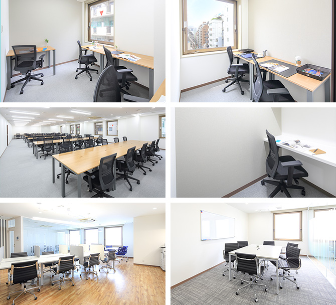

【個室レンタルオフィス】
オープンオフィス大門駅前
オープンオフィス大門駅前がNEW OPEN
オープンオフィス大門駅前センターは、都営大江戸線、浅草線の「大門駅」から徒歩1分、JR、東京モノレール「浜松町駅」からも徒歩4分という立地です。大門エリアでビジネスを展開する企業の本社はもちろん、支店・営業所として、また起業時のオフィスとして最適なレンタルオフィスです。お客様のニーズにあった様々なオフィスをご用意いたしております。
オープンオフィス大門駅前が提供するオフィスサービス
-
 高速インターネット＜光ファイバー＞
高速インターネット＜光ファイバー＞
- 100Mbpsの光ファイバーによるブロードバンド環境をご用意しました。各部屋に配線済みですので、パソコンに繋げばすぐLAN経由で高速インターネットを利用出来ます。
-
 ネットワーク・カラーレーザープリンタ+スキャナー
ネットワーク・カラーレーザープリンタ+スキャナー
- ネットワークを利用して、各お部屋のパソコンから印刷できます。プリンタをご用意いただく必要もございません。
スキャナー機能も搭載しております。
-
 カラーレーザーコピー
カラーレーザーコピー
- フロア内にご用意してあります。カード方式でコピーが出来ますので、小銭の準備が不要です。
-
 ICカードキーによる入室管理
ICカードキーによる入室管理
- 専用ICカードを使ったホテル式のスマートシステムを用いて、セキュリティーを向上させています。
-
 ミーティングルーム（会議室）
ミーティングルーム（会議室）
- 商談・会議にご利用いただける共有スペースをご用意しています。インターネットで簡単に予約をしていただけます。
-
 無線LAN（WiFi）
無線LAN（WiFi）
- 共有スペースとミーティングスペースにて、無線LAN(WiFi)サービスをご利用いただけます。

オープンオフィス大門駅前の特徴

人気ビジネスエリア「芝大門・浜松町」
東京駅、品川駅へのアクセス良好
羽田空港へも最短13分
支店・営業所としても最適なロケーション
大規模再開発を控える
オフィス周辺のMap
オープンオフィス大門駅前近隣のスポット
- ■銀行
- りそな銀行 芝支店
三井住友銀行 浜松町支店 - ■レストラン
- レストラン クレッセント （フレンチ）
すし処 宮葉 （寿司）
あら皮 （ステーキ）
くろぎ （会席料理） - ■ホテル
- 三井ガーデンホテル汐留イタリア街
ベイサイドホテル アジュール竹芝
ホテルヴィラフォンテーヌ東京汐留
芝パークホテル
ホテルインターコンチネンタル東京ベイ
パークホテル東京 コンラッド東京 - ■レジャー
- ゴールドジム浜松町東京
- ■映画館
- TOHOシネマズ 六本木ヒルズ
オープンオフィス大門駅前の住所・アクセス
- 住所:
- 東京都港区芝大門2-2-1 ACN芝大門ビルディング（旧：ユニゾ芝大門二丁目ビル） 6F,7F
- 空港からのアクセス:
- 羽田空港より東京モノレールで「浜松町駅」まで約15分
羽田空港より京急線、都営浅草線で「大門駅」まで約20分
羽田空港よりリムジンバスで「芝パークホテル」まで約60分
成田空港より京成線、都営浅草線で「大門駅」まで約75分 - 電車からのアクセス:
- 都営大江戸線、浅草線「大門駅」より徒歩1分
JR、東京モノレール「浜松町駅」より徒歩4分
都営三田線「芝公園駅」より徒歩7分 - お車でのアクセス:
- 第一京浜「大門交差点」を大門通り、増上寺方面に入り「芝大門」交差点至近
オープンオフィス大門駅前のフロアマップ
6F

7F

※フロア内は禁煙です。
※こちらはイメージ図となりますので、状況が異なる場合は現況を優先させていただきます。
- ◆初回納入金
- 利用料1ヶ月分の保証金
- ◆共益費
- 水道光熱費、ビル共益費、ゴミ出し、フロア・トイレの清掃、共有部分の消耗品代を含みます。
リージャスグループの説明
リージャス・グループは、柔軟なワークスペースを提供する世界最大の企業です。そのネットワークは世界120カ国1,100都市、3300拠点に及びます。会員数は250万人で、業界で成功を収める大小様々な企業や起業家の方々にご利用いただいています。
リージャスは、個室タイプのレンタルオフィス、コワーキングスペースなど多彩なオフィスプラン、近年需要が高まるモバイルワークやバーチャルオフィス、障害復旧サービスの提供を通じ、お客様が予算やワークスタイルに合わせて仕事を行うことができる環境を提供いたします。